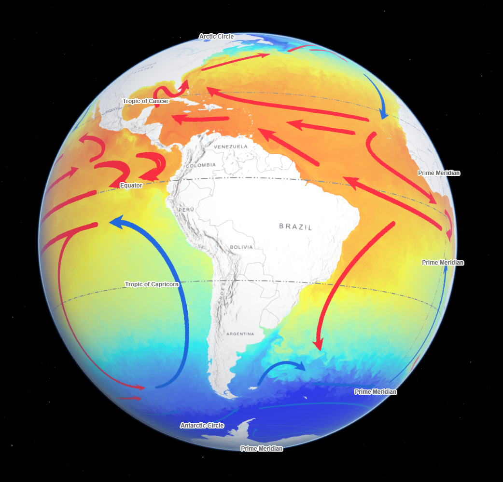
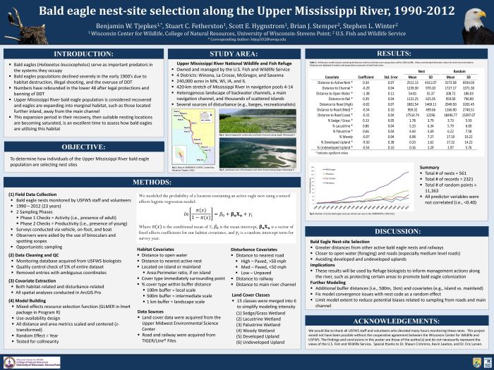

Portfolio | B.W. Tjepkes
Exploring This Site
About
Posts
Gallery
Research
Resources
Sites
GIS Workshop
My Project Gallery
Works from creative pursuits, work assignments, and course projects.
What’s This About?
My workflows span several technologies including ArcGIS and Microsoft products but also include open-source products like RStudio, QGIS, and Quarto. Feel free to explore each visualization category below.
On This Page:
Static & Dynamic Maps
Data Visualization
Talks & Presentations
Technical Reports
Static & Dynamic Maps
Bird Observation Map Series in ArcPy
Anthrome Map of the Upper Peninsula, MI
Pennsylvania Bridges from OpenStreetMap
Forest Cover & Happiness Bivariate Map
Andes Mountains Elevation Map
Moose Sightings Across North America
Post-Secondary Institutions Hexmap
Hyaenidae Distribution Map for Africa
Tiger Range and Conservation Landscapes
Canadian Ecoregions Map
Eagle Mountain Contour Map
National Champion Trees Map

Global Ocean Currents and Temperatures
Great Lakes Watersheds Map
2018 Squirrel Census Sighting Map
Endangered Species Stamp Map
Overlaying Public Lands with BMZs
Choropleth of Missouri Bear Sightings
Shoreline Structure Setback Compliance
County-Based Turkey Harvest Maps
Vineyard and Winery Suitability Map
No matching items
Data Visualization
Vertebrate Morphometrics Graphic
Plotting My GitHub Contributions in 2023
Climate Trends of the Upper Peninsula, MI
Weekly Work Commitments Calendar
No matching items
Talks & Presentations
Master’s Thesis Proposal Presentation
Raccoon Spatial Patterns Presentation
Missouri Bat HCP Overview & Update Poster

Poster on Bald Eagle Nest Selection Research
No matching items
Technical Reports
Annual Report for MDC Furbearer Program
Bald Eagle Nest Monitoring Report
No matching items